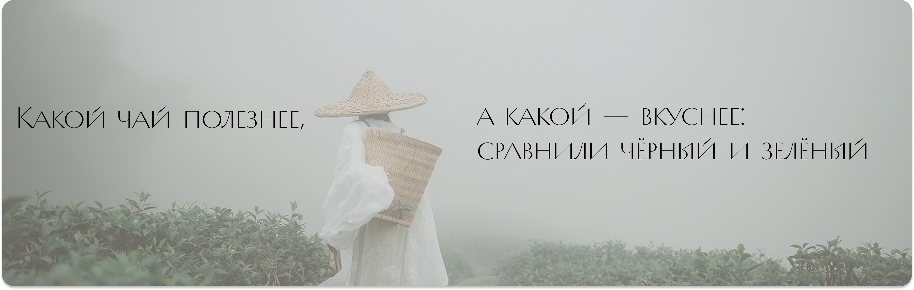
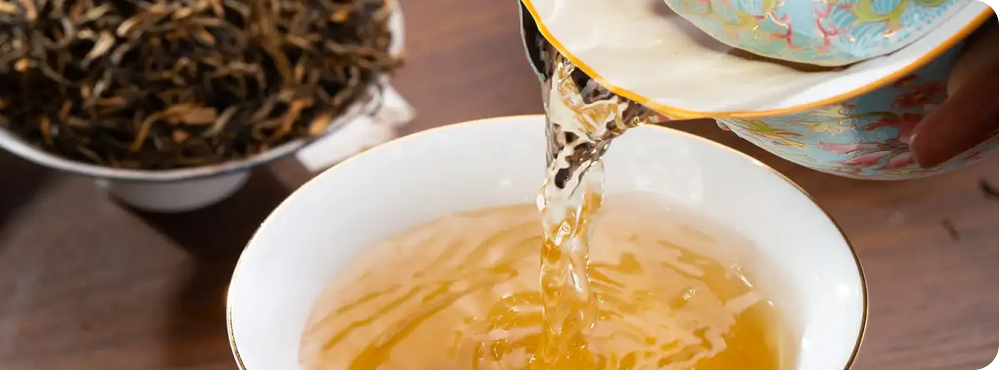

главная
сорта
посуда
статьи
вопросы
главная
/
статьи
главная
сорта
посуда
статьи
вопросы
Самые интересные статьи
все статьи
церемония
история
сорта
посуда
здоровье
свойства
история
традиции
История китайского чая: от древних времён до наших дней
15 марта 2025
здоровье
свойства
Почему Кудин пьют во время простуды и как избежать горечи
20 ноября 2025
церемония
Гунфу ча: как провести традиционную чайную церемонию дома
3 декабря 2025
сорта
обзор
«Ворсистые пики с Жёлтых гор»: чем маофэн Хуаншань отличается от других маофэнов?
13 февраля 2026

пуэр
ферментация
традиции
посуда
гайвань
Гайвань или чайник: что выбрать для разных сортов чая?
25 января 2026
чайные пары
эстетика
Как выбрать идеальную чайную пару: форма, материал и значение
10 февраля 2026

улун
Те Гуань Инь: железная богиня милосердия в мире чая
18 февраля 2026
чайный этикет
традиции
Китайский чайный этикет: жесты, традиции и уважение
5 марта 2026
хранение
Как правильно хранить пуэр: создаём идеальные условия дома
12 марта 2026
история
легенды
Легенды о чае: от императора Шэнь Нуна до современных традиций
22 марта 2026
здоровье
исследования
Научные исследования: как чай влияет на мозг и долголетие
28 марта 2026
церемония
чайная пара
Как организовать домашнюю чайную церемонию для друзей
2 апреля 2026
сорта
да хун пао
Да Хун Пао: секреты легендарного красного халата
8 апреля 2026
Показать еще